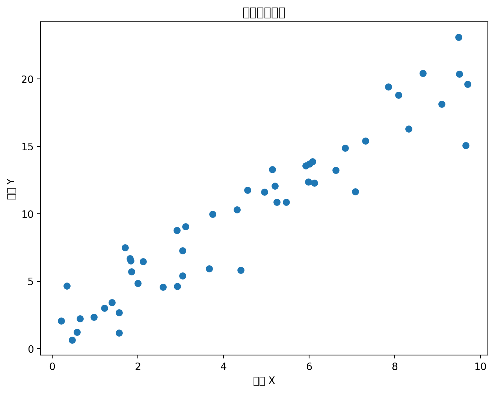
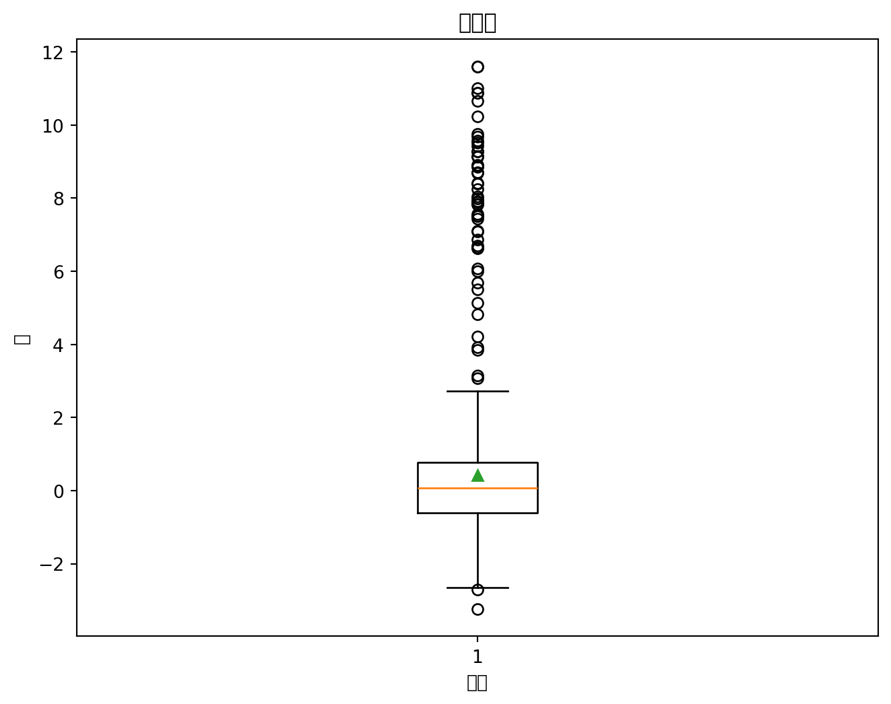

flowchart TD
A[数据 📦] --> B(定量数据 🔢)
A --> C(定性数据 🔤)
B --> D(离散变量 🎲)
B --> E(连续变量 📏)
C --> F(定序变量 🥇🥈🥉)
C --> G(名义变量 ♂️♀️)
数据分析理论与Python实战
第三章 数据预处理
目录 🧭
我们将围绕以下四个方面展开：
- 了解数据：数据的分类、特征以及如何描述数据。
- 数据质量评估：评估数据的完整性、一致性、准确性和及时性。
- 数据清洗：处理缺失值、噪声、不一致和异常数据。
- 特征工程：从原始数据中提取有用的特征。
了解数据 🔎
首先，深入了解数据。我们需要知道数据有哪些类型，以及如何描述数据的特征。这就像认识一个新朋友 🧑🤝🧑，要了解他的基本信息和性格特点。😊
了解数据 - 数据的分类 📊
了解数据 - 数据的分类 (续)
数据 (Data) 📦 是我们进行分析的基础。就像建筑师需要了解不同类型的建筑材料🧱、木材🪵、钢筋🔩一样，数据分析师也需要了解不同类型的数据。
在数据分析中，我们通常将数据分为两大类：定量数据和定性数据。
了解数据 - 定量数据 🔢
flowchart TD
A[数据 📦] --> B(定量数据 🔢)
B --> D(离散变量 🎲)
B --> E(连续变量 📏)
- 可以测量，用数字表示。
- 就像测量身高📏和体重⚖️一样，可以得到具体的数值。
- 可参与数学运算，如计算平均值、标准差等。
了解数据 - 定量数据：细分
定量数据又可以分为两种：
- 离散变量 (Discrete Variable) 🎲
- 连续变量 (Continuous Variable) 📏
了解数据 - 离散变量 🎲
flowchart TD
B(定量数据 🔢) --> D(离散变量 🎲)
- 取值有限或可数，通常是整数。
- 就像掷骰子🎲，结果只能是1、2、3、4、5、6。
- 例如：客户数量、产品数量。
- 举例：商店一天卖出的苹果数量🍎可能是10个、25个，但不会是10.5个。
了解数据 - 连续变量 📏
flowchart TD
B(定量数据 🔢) --> E(连续变量 📏)
- 取值可以是区间内的任意值，通常带小数点。
- 就像测量身高📏，可以精确到毫米。
- 例如：身高、体重、温度。
- 举例：身高🧍可能是1.75米，体重可能是68.5公斤。
了解数据 - 定性数据 🔤
flowchart TD
A[数据 📦] --> C(定性数据 🔤)
C --> F(定序变量 🥇🥈🥉)
C --> G(名义变量 ♂️♀️)
- 描述性质或类别，通常用文字表示。
- 就像描述性格😎或爱好🎨。
- 通常不能直接参与数学运算。
了解数据 - 定性数据：细分
定性数据也可以分为两种：
- 定序变量 (Ordinal Variable) 🥇🥈🥉
- 名义变量 (Nominal Variable) ♂️♀️
了解数据 - 定序变量 🥇🥈🥉
flowchart TD
C(定性数据 🔤) --> F(定序变量 🥇🥈🥉)
- 类别间有顺序关系，但不能进行数值运算。
- 例如：教育程度、满意度。
- 举例：比赛奖牌🏅有金牌、银牌、铜牌，有等级顺序，但不能说金牌比银牌“好多少”。
了解数据 - 名义变量 ♂️♀️
flowchart TD
C(定性数据 🔤) --> G(名义变量 ♂️♀️)
- 类别间无顺序关系，也不能进行数值运算。
- 就像性别🚹🚺，只有类别之分，没有等级。
- 例如：性别、颜色、血型。
- 举例：性别🚹🚺有男和女，没有等级或顺序关系。
了解数据 - 数据分类：总结 📝
理解数据的分类有助于我们选择合适的分析方法。就像选择合适的工具🛠️来修理不同的东西一样。
| 数据类型 | 子类型 | 特点 | 举例 |
|---|---|---|---|
| 定量数据 🔢 | 离散变量 🎲 | 取值有限或可数，通常为整数 | 客户数量、产品数量 |
| 连续变量 📏 | 取值可为区间内任意值，通常带小数点 | 身高、体重、收入 | |
| 定性数据 🔤 | 定序变量 🥇🥈🥉 | 类别间有顺序关系，但不能进行数值运算 | 教育程度、满意度 |
| 名义变量 ♂️♀️ | 类别间无顺序关系，也不能进行数值运算 | 性别、颜色、血型 |
了解数据 - 数据的特征 🌟
了解数据的分类后，我们再来看看如何描述数据的特征。就像描述一个人的外貌🧔和性格😎一样。
首先是集中趋势，描述数据集中在哪个位置。就像射箭🎯，看箭是否集中在靶心🎯。常用测度有均值、中位数和众数。
了解数据 - 数据的特征：集中趋势 - 定性数据📊
对于定性数据：
- 均值、中位数通常无意义。
- 定序变量：中位数和众数能反映一定含义。
- 名义变量：仅众数有意义，但不能代表该特征占多数。
- 名义变量中的二分变量：若取值合适，均值可解释。
了解数据 - 集中趋势：均值 ➕➖
均值 (Mean)：
- 所有数据值的总和除以数据个数。
- 就像求平均分。
- 公式： \[ \bar{x} = \frac{\sum_{i=1}^{n} x_i}{n} \]
- 优点：易计算，考虑所有值。
- 缺点：易受极端值影响。
了解数据 - 集中趋势：中位数 🧍
中位数 (Median)：
- 数据按大小排序后，位于中间位置的数值。
- 就像按身高排队🧍🧍🧍，中间人的身高。
- 若数据个数为偶数，则为中间两个值的平均值。
- 优点：不受极端值影响。
- 缺点：不能反映所有数据值信息。
了解数据 - 集中趋势：众数 🙋
众数 (Mode)：
- 数据中出现次数最多的数值。
- 就像投票🗳️，得票最多的选项。
- 优点：不受极端值影响，适用所有类型。
- 缺点：可能多众数或无众数，不能反映所有值信息。
了解数据 - 集中趋势：总结 📝
| 测度 | 定义 | 适用数据类型 | 优点 | 缺点 |
|---|---|---|---|---|
| 均值 | 总和除以个数 | 定量数据 | 易计算，考虑所有值 | 易受极端值影响 |
| 中位数 | 排序后中间值 | 定量、定序 | 不受极端值影响 | 不能反映所有值信息 |
| 众数 | 出现次数最多值 | 定量、定序、名义 | 不受极端值影响，适用所有类型 | 可能多众数或无众数，不能反映所有值信息 |
了解数据 - 集中趋势：举例 🍎
举例：
一组学生成绩：70, 75, 80, 85, 90, 95, 100
- 均值：85
- 中位数：85
- 众数：无
了解数据 - 集中趋势：举例 (续) 🍎
若一个学生成绩为500：
- 均值：142.14 (受极端值影响)
- 中位数：85 (不受影响)
- 众数：无
了解数据 - 集中趋势：定性数据 🔤
定性数据的集中趋势：
- 均值、中位数通常无意义。
- 众数可反映出现次数最多的类别。
- 举例：头发颜色调查，众数为“黑色”，则黑发最多。
- 不同数据类型适用不同集中趋势测度。
了解数据 - 离散程度 📏
除了集中趋势，还需要了解离散程度，描述数据间的差异。就像测量身高差异🚶🧍🚶♀️，是悬殊还是接近。
常见测度：极差、方差、标准差、四分位距、平均差和变异系数。
了解数据 - 离散程度：定量与定性数据
- 定量数据：
- 极差：数据范围大小。
- 方差、标准差、平均差：数据相对均值偏离。
- 变异系数：标准差除以均值，修正度量单位影响。
- 定性数据：
- 极差：取值类别，含义有限。
- 其他测度对定性数据（尤其名义变量）意义不大。
了解数据 - 离散程度：极差 ↔︎️
极差 (Range)：
- 最大值与最小值之差。
- 就像测量班级最高和最矮同学的身高差。
- 公式：
Range = Max - Min - 优点：计算简单。
- 缺点：易受极端值影响，不能反映分布。
了解数据 - 离散程度：方差 📐
方差 (Variance)：
- 每个值与均值之差的平方的平均值。
- 衡量数据偏离均值的程度。
- 公式： \[ Var(X) = \frac{\sum_{i=1}^{n} (x_i - \bar{x})^2}{n} \]
- 优点：考虑所有值，反映离散程度。
- 缺点：单位是数据单位平方，不易解释。
了解数据 - 离散程度：标准差 📏
标准差 (Standard Deviation)：
- 方差的平方根。
- 衡量偏离均值程度，与数据单位相同。
- 公式： \[ SD(X) = \sqrt{Var(X)} \]
- 优点：考虑所有值，单位与数据相同，易解释。
- 缺点：计算比极差复杂。
了解数据 - 离散程度：四分位距 📦
四分位距 (IQR)：
- 上四分位数(Q3)与下四分位数(Q1)之差。
- 衡量中间50%数据的离散程度。
- 公式：
IQR = Q3 - Q1 - 优点：不受极端值影响。
- 缺点：不能反映所有值信息。
了解数据 - 离散程度：平均差 ➖
平均差 (MAD)：
- 每个值与均值之差的绝对值的平均值。
- 衡量数据偏离均值的平均距离。
- 公式： \[ MAD = \frac{\sum_{i=1}^{n} |x_i - \bar{x}|}{n} \]
- 优点：考虑所有值，反映离散程度。
- 缺点：计算相对复杂。
了解数据 - 离散程度：变异系数 ➗
变异系数 (CV)：
- 标准差除以均值。
- 衡量相对离散程度，无量纲。
- 公式： \[ CV = \frac{SD(X)}{\bar{x}} \]
- 优点：无量纲，可比较不同数据集离散。
- 举例：比较身高和体重离散程度。
- 缺点：均值接近0时可能很大，失去意义。
离散程度：总结 📝
| 指标 | 定义 | 优点 | 缺点 |
|---|---|---|---|
| 极差 | 最大值与最小值之差 | 计算简单 | 易受极端值影响，不能反映分布 |
| 方差 | 值与均值之差的平方的平均值 | 考虑所有值，反映离散 | 单位平方，不易解释 |
| 标准差 | 方差平方根 | 考虑所有值，单位与数据相同，易解释 | 计算较复杂 |
| 四分位距 | Q3与Q1之差 | 不受极端值影响 | 不能反映所有值信息 |
| 平均差 | 值与均值之差的绝对值的平均值 | 考虑所有值，反映离散 | 计算较复杂 |
| 变异系数 | 标准差除以均值 | 无量纲，可比较不同数据集 | 均值接近0时可能很大，失去意义 |
离散程度：总结 (续) 🍎
两组数据：
- A: 1, 2, 3, 4, 5
- B: 1, 1, 3, 5, 5
均值都为3，但离散程度不同：
- A: 极差=4, 方差=2, 标准差≈1.41, IQR=3, MAD=1.2, CV≈0.47
- B: 极差=4, 方差=3.2, 标准差≈1.79, IQR=4, MAD=1.6, CV≈0.60
B组离散程度更大。
了解数据 - 相关性 🤝
测量相关性，了解变量变化是否相关。就像研究朋友关系🧑🤝🧑，看是否经常一起玩耍🤹。
了解数据 - 相关性：方法
- 相关性测量 🤝
- 可视化：折线图📈、散点图，探索关系。
- 举例：气温🌡️和冰淇淋销量🍦。
- 协方差：确定关系正负，无强度信息，受单位影响。
- 相关系数：不受单位影响，理论上限±1，完全线性相关。
- 举例：身高🧍和体重⚖️。
- 回归分析：一元或多元。
- 举例：广告投入💰预测销售额📈。
- 可视化：折线图📈、散点图，探索关系。
了解数据 - 协方差 ➗✖️
协方差 (Covariance)：
- 衡量两变量总体误差。趋势一致为正，相反为负，独立为0。
- 公式： \[ Cov(X, Y) = \frac{\sum_{i=1}^{n} (x_i - \bar{x})(y_i - \bar{y})}{n} \]
- 优点：判断趋势是否一致。
- 缺点：受单位影响，不能反映强度。
了解数据 - 相关系数 📏
相关系数 (Correlation Coefficient)：
- 衡量线性相关程度，[-1, 1]。
- 公式 (Pearson)： \[ r = \frac{Cov(X, Y)}{SD(X) \cdot SD(Y)} \]
- 优点：不受单位影响，反映强度，范围固定。
- 解释：
- r = 1：完全正相关。
- r = -1：完全负相关。
- r = 0：不相关。
- |r|越大，相关性越强。
了解数据 - 相关系数：举例
| 相关系数 | 解释 |
|---|---|
| 0.9 | 强正相关 |
| 0.5 | 中等正相关 |
| 0.1 | 弱正相关 |
| 0 | 不相关 |
| -0.1 | 弱负相关 |
| -0.5 | 中等负相关 |
| -0.9 | 强负相关 |
了解数据 - 相关性可视化 📊
import matplotlib.pyplot as plt
import numpy as np
# 生成模拟数据
np.random.seed(42)
x = np.random.rand(50) * 10
y = 2 * x + 1 + np.random.randn(50) * 2
# 绘制散点图
plt.figure(figsize=(8, 6))
plt.scatter(x, y)
plt.xlabel("变量 X")
plt.ylabel("变量 Y")
plt.title("相关性可视化")
plt.show()

了解数据 - 相关性可视化 (续)
相关性可视化:
- 散点图直观展示关系。
- 点呈现趋势 (如倾斜) 则可能相关。
- 点杂乱无章则可能不相关。
了解数据 - 数据缺失 ❓
真实数据常有数据缺失。像书📚缺页。需了解原因和类型，以便处理。
- 数据缺失 (Missing Data) ❓
- 不含缺失值的变量称完全变量，含缺失值称不完全变量。
- 原因：
- 遗漏：采集故障、存储故障、人为因素等。
- 举例：传感器故障📡。
- 属性不存在。
- 举例：未填婚姻状况💑。
- 信息忽略。
- 举例：认为“昵称”👻不重要。
- 遗漏：采集故障、存储故障、人为因素等。
- 举例：
- 收入缺失 💸
- 参数缺失 ⚙️
- 未答问题 📝
了解数据 - 缺失原因
数据缺失的原因：
- 数据遗漏：
- 设备故障：传感器📡、硬盘💽。
- 网络问题：中断🔗、丢包。
- 人为因素：录入错误⌨️、忘填。
- 属性不存在：
- 对象本身不具备。
- 举例：未婚无配偶。
- 对象本身不具备。
- 信息被忽略：
- 采集者认为不重要。
- 用户不愿提供。
了解数据 - 噪声 📢
噪声是数据中随机误差或偏差。像照片噪点，影响清晰度。需识别处理，减少影响。
- 噪声 (Noise) 📢
- 观测变量的随机误差或方差。
观测量 = 真实数据 + 噪声
- 举例：
- 测量误差 📏
- 录入错误 ⌨️
- 随机干扰 ⚡
了解数据 - 噪声来源
噪声的来源：
- 测量误差：
- 仪器精度限制。
- 环境干扰。
- 人为操作误差。
- 采集错误：
- 录入错误。
- 传输错误。
- 随机因素：
- 自然波动。
- 无法预测干扰。
了解数据 - 离群点 🦄
离群点是明显不同的数据点。像羊群🐑中独角兽🦄。需识别处理，避免误导。
- 离群点 (Outlier) 🦄
- 与一般行为或模型不一致的数据。
- 举例：
- 欺诈交易 💳
- 异常天气 🌪️
- 疾病爆发 🤒
了解数据 - 离群点原因
离群点的原因：
- 数据错误：
- 录入错误。
- 测量错误。
- 异常事件：
- 罕见现象。
- 突发事件。
- 真实变异：
- 个体差异。
- 举例：篮球运动员身高。
- 个体差异。
数据质量 💯
预处理前，评估数据质量。像做菜🧑🍳前检查食材🥬🥕🥩。质量影响结果可靠性。
数据质量：四要素
- 数据分析结果有效性和准确性的前提。💪
- 四要素：
- 完整性 (Completeness)
- 一致性 (Consistency)
- 准确性 (Accuracy)
- 及时性 (Timeliness)
数据质量 - 完整性 💯
完整性 (Completeness) 💯
- 数据信息是否缺失。可能是记录缺失，也可能是字段缺失。
- 举例: 记录缺失像漏掉家庭👨👩👧👦信息；字段缺失像漏填必填项。
- 不完整数据价值降低，是基础评估标准。像书📚缺页。
数据质量 - 完整性：检查
- 统计记录数和唯一值个数。
- 日志访问量突降需检查。
- 地区统计缺失需检查。
- 统计空值(NULL)个数。
- 举例: Python
pandas：
- 举例: Python
import pandas as pd
import numpy as np
# 创建含缺失值的DataFrame
data = {'Name': ['Alice', 'Bob', 'Charlie', None],
'Age': [25, np.nan, 30, 40],
'City': ['NY', 'London', np.nan, 'Tokyo']}
df = pd.DataFrame(data)
# 检查缺失值
print(df.isnull().sum())Name 1
Age 1
City 1
dtype: int64数据质量 - 完整性：评估
如何评估完整性：
- 计算缺失值比例：
- 缺失值数量 / 总数据量。
- 检查关键字段是否缺失：
- 举例：客户ID、订单号。
- 可视化缺失值：
- 热力图、条形图等。
- Python
missingno库：
- Python
- 热力图、条形图等。
import missingno as msno
import pandas as pd
import numpy as np
# 创建含缺失值的DataFrame
data = {'Name': ['Alice', 'Bob', 'Charlie', None],
'Age': [25, np.nan, 30, 40],
'City': ['NY', 'London', np.nan, 'Tokyo']}
df = pd.DataFrame(data)
# 可视化缺失值
msno.matrix(df)数据质量 - 一致性 🔄
一致性 (Consistency) 🔄
- 数据是否合乎规范，集合内数据是否统一格式。
数据质量 - 一致性：体现
- 主要体现在记录规范和是否符合逻辑。
- 规范：编码、格式，如手机号13位数字，IP地址格式。
- 举例: 身份证、日期格式。
- 逻辑：数据间关系，如PV≥UV，跳出率0-1间。
- 举例: 年龄非负，身高不超3米。
- 规范：编码、格式，如手机号13位数字，IP地址格式。
- 一致性审核重要且复杂。像检查产品📦📦📦是否符合规格。
数据质量 - 一致性：举例
- 举例:
- 日期格式：
- 2023-10-26
- 10/26/2023
- 单位：
- 温度：℃, ℉
- 长度：m, ft
- 日期格式：
数据质量 - 一致性：举例 (续)
- 编码：
- 性别：“男/女”, “M/F”, “1/0”
- 地区：“北京”, “北京市”
- 逻辑矛盾：
- 下单时间晚于发货。
- 年龄大于150。
数据质量 - 一致性：检查
- 检查：
- 定义规范：格式、编码、范围等。
- 数据剖析：工具或脚本检查格式、分布等。
- 校验规则：编写规则检查关系。
数据质量 - 准确性 ✅
准确性 (Accuracy) ✅
- 数据记录信息是否异常或错误。
- 关注数据中的错误。
数据质量 - 准确性：错误
- 关注错误，例如：
- 乱码。
- 举例: 中文变“锟斤拷”�。
- 异常值，不符有效性。
- 举例: 年龄-5，身高10米。
- 乱码。
数据质量 - 准确性：数据集
- 可能存在于个别记录，也可能存在于整个数据集。
- 字段错误，如数量级错误，易发现。
- 个别异常值，用最大值、最小值、箱线图审核。
数据质量 - 准确性：举例
- 举例：
- 拼写错误：“北京”写成“背景”。
- 数值错误：“100”写成“1000”。
- 单位错误：“米”写成“厘米”。
- 乱码：文本显示为无法识别字符。
数据质量 - 准确性：检查
- 检查：
- 可视化：散点图、直方图、箱线图。
- 统计分析：均值、中位数、标准差。
- 业务规则校验：检查是否符合常识。
- 数据比对：与可靠来源比对。
数据质量 - 准确性：箱线图 📦
import matplotlib.pyplot as plt
import numpy as np
# 生成模拟数据
np.random.seed(42)
data = np.concatenate([np.random.normal(0, 1, 950),
np.random.normal(8, 2, 50)])
# 绘制箱线图
plt.figure(figsize=(8, 6))
plt.boxplot(data, showmeans=True)
plt.xlabel("数据")
plt.ylabel("值")
plt.title("箱线图")
plt.show()/home/runner/.local/lib/python3.12/site-packages/IPython/core/pylabtools.py:170: UserWarning: Glyph 20540 (\N{CJK UNIFIED IDEOGRAPH-503C}) missing from font(s) DejaVu Sans.
fig.canvas.print_figure(bytes_io, **kw)
/home/runner/.local/lib/python3.12/site-packages/IPython/core/pylabtools.py:170: UserWarning: Glyph 31665 (\N{CJK UNIFIED IDEOGRAPH-7BB1}) missing from font(s) DejaVu Sans.
fig.canvas.print_figure(bytes_io, **kw)
/home/runner/.local/lib/python3.12/site-packages/IPython/core/pylabtools.py:170: UserWarning: Glyph 32447 (\N{CJK UNIFIED IDEOGRAPH-7EBF}) missing from font(s) DejaVu Sans.
fig.canvas.print_figure(bytes_io, **kw)
/home/runner/.local/lib/python3.12/site-packages/IPython/core/pylabtools.py:170: UserWarning: Glyph 22270 (\N{CJK UNIFIED IDEOGRAPH-56FE}) missing from font(s) DejaVu Sans.
fig.canvas.print_figure(bytes_io, **kw)
/home/runner/.local/lib/python3.12/site-packages/IPython/core/pylabtools.py:170: UserWarning: Glyph 25968 (\N{CJK UNIFIED IDEOGRAPH-6570}) missing from font(s) DejaVu Sans.
fig.canvas.print_figure(bytes_io, **kw)
/home/runner/.local/lib/python3.12/site-packages/IPython/core/pylabtools.py:170: UserWarning: Glyph 25454 (\N{CJK UNIFIED IDEOGRAPH-636E}) missing from font(s) DejaVu Sans.
fig.canvas.print_figure(bytes_io, **kw)

数据质量 - 准确性：箱线图 (续)
箱线图：
- 箱体：中间50%数据。
- 中位数：箱体中间线。
- 上下边缘：Q3和Q1。
- 触须：延伸至1.5倍IQR。
- 异常值：超出触须点。
数据质量 - 及时性 ⏱️
及时性 (Timeliness) ⏱️
- 数据产生到可查看的间隔，即延时。
- 举例: 股票行情、天气预报。
- 数据分析周期加建立时间过长，结论失去意义。像新闻📰时效性。
数据质量 - 及时性：重要性
重要性：
- 实时决策：需据最新数据快速决策。
- 举例：股票交易、自动驾驶。
- 趋势分析：过时数据无法反映当前。
- 举例：去年数据分析明年销售。
- 数据价值：随时间推移，价值降低。
数据清洗 🧼
数据清洗是预处理重要环节，解决质量问题。像做菜🧑🍳前洗食材。
目的是处理缺失值、噪声、不一致、异常数据，使数据符合标准。
数据清洗：内容
- 缺失值处理
- 噪声数据处理
- 不一致数据处理
- 异常数据处理
数据清洗 - 缺失值 ❓
缺失值，可忽略或填补。选择取决于比例和特点。像修衣服👕，洞大则扔，小则补。
数据清洗 - 缺失值：方法
- 方法：
- 忽略 (Deletion)：简单，但可能损失数据。像扔苹果🍎。
- 填补 (Imputation)：填固定值、均值，或据记录填充。像替苹果🍎。
数据清洗 - 缺失值：忽略
忽略 (Deletion)：
- 方法：
- 删含缺失值记录 (行)。
- 删缺失过多属性 (列)。
- 优点：简单。
- 缺点：
- 可能损失数据。
- 可能偏差。
- 举例：缺失值集中某群体，删数据致结果偏。
- 适用：
- 缺失值比例低。
- 缺失值不重要。
数据清洗 - 缺失值：填补
填补 (Imputation)：
- 方法：
- 固定值：0、-1、“未知”。
- 统计值：均值、中位数、众数。
- 模型预测：回归、决策树。
- 最近邻：用相似记录值填充。
- 优点：
- 保留记录。
- 减少损失。
- 缺点：
- 填补值可能不准。
- 可能偏差。
- 适用：
- 缺失值比例高。
- 缺失值重要。
数据清洗 - 缺失值：固定值
固定值填补：
- 举例：
- 数值型：0或-1。
- 类别型：“未知”、“佚名”、“N/A”。
- 优点：简单。
- 缺点：
- 单一，不符实际。
- 可能偏差。
- 适用：
- 含义明确，可用固定值替代。
- 举例：“是否已婚”，缺失值用0表未婚。
- 含义明确，可用固定值替代。
数据清洗 - 缺失值：统计值
统计值填补：
- 举例：
- 数值型：均值、中位数、众数。
- 类别型：众数。
- 优点：利用已有信息。
- 缺点：
- 易受极端值影响 (均值)。
- 可能掩盖分布。
- 适用：
- 数值型，分布均匀 (均值)。
- 数值型，分布偏斜 (中位数)。
- 类别型 (众数)。
数据清洗 - 缺失值：模型预测
模型预测填补：
- 举例：
- 回归、决策树、随机森林。
- 优点：
- 利用关系，填补值更接近真实。
- 缺点：
- 计算复杂。
- 需选模型。
- 可能过拟合。
- 适用：
- 与其他变量有强关系。
- 有合适模型。
数据清洗 - 缺失值：对比 📝
| 方法 | 优点 | 缺点 | 适用场景 |
|---|---|---|---|
| 忽略 | 简单 | 可能损失数据，偏差 | 比例低，不重要 |
| 填补 | 保留记录，减少损失 | 可能不准，偏差 | 比例高，重要 |
| 固定值 | 简单 | 单一，不符实际 | 含义明确，可固定值替代 |
| 统计值 | 利用已有信息 | 易受极端影响，掩盖分布 | 数值型，分布均匀(均值)；偏斜(中位数)；类别型(众数) |
| 模型预测 | 利用关系，更接近真实 | 计算复杂，需选模型，可能过拟合 | 与其他变量强关系，有模型 |
数据清洗 - 缺失值：举例
举例：
“年龄”列有缺失值。
- 忽略：删年龄缺失记录。
- 固定值：用0或-1填充。
- 统计值：用已知年龄均值填充。
- 模型预测：据职业、收入等
数据清洗 - 缺失值处理：模型预测（续）
模型预测填补：
- 举例：
- 根据用户的其他信息（如职业、收入等），建立一个模型来预测缺失的年龄。
数据清洗 - 噪声数据处理 🔊
对于噪声数据，我们可以使用分箱、聚类或回归等方法进行处理。就像去除照片上的噪点📸一样，让照片更清晰。
数据清洗 - 噪声数据处理：方法
- 分箱 (Binning) 🗑️
- 通过考察相邻数据来确定最终值，实现平滑。按属性值划分子区间，放入“箱子”。箱深表记录数，宽表范围。
- 举例: 年龄分段：0-10、11-20、21-30岁等。
- 聚类 (Clustering) 🧩
- 数据分组为簇。找出并清除簇外值 (孤立点)。
- 举例: 客户按消费习惯分群，找出“异常客户”。
- 回归 (Regression) 📈
- 发现变量关系，寻找映射，平滑数据。预测数值，包括线性回归和非线性回归。
- 举例: 用面积、位置预测房价。
数据清洗 - 噪声：分箱 🗑️
分箱 (Binning)：
- 方法：
- 数据按属性值划分区间 (箱子)。
- 用代表值 (均值、中位数、边界值等) 替代箱内值。
- 类型：
- 等宽：宽度相同。
- 等频：数据量相同。
- 自定义：据需求定边界。
- 优点：
- 简单。
- 平滑，降噪。
- 缺点：
- 需确定数量和宽度。
- 可能损失细节。
- 适用：
- 数据量大。
- 噪声为小幅波动。
数据清洗 - 噪声：聚类 🧩
聚类 (Clustering)：
- 方法：
- 数据划分簇，簇内相似度高，簇间低。
- 远离中心点视为噪声或离群点。
- 算法：
- K-Means
- DBSCAN
- 层次聚类
- 优点：
- 自动识别离群点。
- 缺点：
- 需选算法和参数。
- 计算量可能大。
- 适用：
- 明显类别结构。
- 噪声为离群点。
数据清洗 - 噪声：回归 📈
回归 (Regression)：
- 方法：
- 建立模型，用其他变量预测目标变量。
- 用预测值代替原始值，平滑数据。
- 模型：
- 线性回归
- 多项式回归
- 支持向量回归
- 决策树回归
- 优点：
- 利用关系，平滑预测。
- 缺点：
- 需选模型。
- 可能过拟合或欠拟合。
- 适用：
- 明显趋势或模式。
- 噪声为随机误差。
数据清洗 - 噪声：对比 📝
| 方法 | 优点 | 缺点 | 适用场景 |
|---|---|---|---|
| 分箱 | 简单，平滑，降噪 | 需定数量宽度，可能损失细节 | 数据量大，噪声小幅波动 |
| 聚类 | 自动识别离群点 | 需选算法参数，计算量可能大 | 明显类别结构，噪声为离群点 |
| 回归 | 利用关系，平滑预测 | 需选模型，可能过拟合或欠拟合 | 明显趋势模式，噪声为随机误差 |
数据清洗 - 不一致数据 🔄
不一致数据，据情况处理，可能需人工干预或工具。像整理房间🧹，放东西到正确位置。
数据清洗 - 不一致数据：处理
- 据实际情况定方案。
- 人工修复，知识工程工具修改。
- 举例: “性别”列有“男/女”和“M/F”，统一。
- 多源集成，编码差异，需转化。
- 举例: 两库“日期”格式不同，统一。
数据清洗 - 不一致数据：方法 (续)
处理方法：
- 标准化：
- 统一格式、编码、单位。
- 举例：日期统一为“YYYY-MM-DD”。
- 统一格式、编码、单位。
- 转换：
- 转换为统一表示。
- 举例：“男/女”和“M/F”转“1/0”。
- 转换为统一表示。
- 合并：
- 多源数据合并为统一集。
- 举例：不同部门客户数据合并。
- 多源数据合并为统一集。
- 人工校验：
- 无法自动处理，需人工检查修正。
数据清洗 - 异常数据 💥🩹
异常数据，判断是否可还原。不可还原则过滤；可还原尝试修复。像修电器🔌，有些可修，有些不可。
数据清洗 - 异常数据：类型
- 不可还原 (Irrecoverable) 💥
- 难修正，如乱码，字符截断，异常值。无规律则过滤。像碎花瓶💐。
- 可还原 (Recoverable) 🩹
- 参杂无用字符，用取子串、
trim()去空格。- 举例: ” Hello World “去空格。
- 字符截断，可推导则还原。
- 举例: 用户名“Alexan”，推断“Alexander”。
- 数值单位差异，转化处理。
- 举例: 重量“克”和“千克”统一。
- 参杂无用字符，用取子串、
数据清洗 - 异常：不可还原
不可还原异常：
- 特点：无法恢复到原始正确状态。
- 举例：
- 乱码：编码错误致无法识别。
- 严重丢失：关键信息缺失。
- 完全错误：与真实不符。
- 处理：
- 过滤：直接删除。
数据清洗 - 异常：可还原
可还原异常：
- 特点：可恢复到原始正确状态。
- 举例：
- 字符串：
- 多余空格、特殊字符：
trim()、正则。 - 截断：可推断则恢复。
- 多余空格、特殊字符：
- 数值：
- 单位错误：转换。
- 数量级错误：乘除常数。
- 字符串：
- 处理：
- 据情况选方法修复。
特征工程 ⚙️
特征工程是预处理最后和重要环节。提取有用特征，提高性能。像厨师👨🍳切食材🔪，方便烹饪。
特征工程：作用
- 原始数据维数高，清洗后成原始特征，但不都有用，有些需处理，有些干扰。像木材🪵，有些直接用，有些加工，有些不能用。
- 利用知识处理数据创建特征，供后续分析。目的：尽量少特征描述数据，保持特性。像木材加工家具🪑🛏️🛋️。
- 特征选择 (Feature Selection)
- 特征构建 (Feature Construction)
- 特征提取 (Feature Extraction)
特征工程 - 特征选择 🎯
特征选择是从原始特征中选对分析最有用的。像选演员🎭，选最适合角色的。
特征工程 - 特征选择：原则
- 原则 🎯
- 是否发散：不发散，方差近0，无区分作用。像身高🧍都一样。
- 是否相关：取值能改变结果。相关性高优先。像预测房价🏠，面积、位置比颜色重要。
- 信息是否冗余：本质相同，相关性高。像“年龄”和“出生年”。
特征工程 - 特征选择：重要性
重要性：
- 提高性能：选相关特征提准确性和泛化。
- 降低成本：减少数量降训练预测时间和资源。
- 增强可解释性：更少特征使模型易理解。
特征工程 - 特征选择：方法 🧰
方法多，据情况选。像选交通工具🚗✈️🚄，据距离、时间、预算。
特征工程 - 特征选择：方法 (续)
- 方法 🧰
- Filter (过滤)：按发散性或相关性评分，设阈值或个数，选择。
- 举例: 算方差，选大于阈值。
- Wrapper (包装)：据目标函数，每次选或排除若干。
- 举例: 递归特征消除 (RFE)，逐步减，直到最佳。
- Embedded (集成)：训练算法模型，得权值，据系数选。类似Filter，但通过训练定优劣。
- 举例: LASSO回归，L1正则化使系数变0，选择。
- Filter (过滤)：按发散性或相关性评分，设阈值或个数，选择。
特征工程 - 选择：过滤法
过滤法 (Filter)：
- 原理：据特性 (方差、相关系数、互信息等) 评估重要性，排序或筛选。
- 指标：
- 方差：离散程度。
- 相关系数：线性相关。
- 卡方检验：类别型特征与目标相关性。
- 互信息：非线性相关。
- 优点：
- 计算简单，快。
- 不需训练。
- 缺点：
- 忽略关系。
- 可能选冗余。
- 适用：
- 维度高，需快速筛选。
特征工程 - 选择：包装法
包装法 (Wrapper)：
- 原理：看作搜索，通过组合训练模型，评估性能，选最佳子集。
- 方法：
- 递归特征消除 (RFE)：逐步减，直到最佳。
- 前向选择：逐步加，直到不提升。
- 后向消除：逐步减，直到不下降。
- 优点：
- 针对目标函数优化，效果好。
- 缺点：
- 计算量大。
- 易过拟合。
- 适用：
- 维度不高。
- 性能要求高。
特征工程 - 选择：集成法
集成法 (Embedded)：
- 原理：嵌入模型训练，通过学习自动选择。
- 方法：
- LASSO回归：L1正则化使系数变0，选择。
- 决策树：据信息增益或基尼系数选分裂。
- 随机森林：评估重要性，排序。
- 优点：
- 结合过滤和包装，考虑关系，利用模型，效果好。
- 缺点：
- 需训练，计算量可能大。
- 适用：
- 维度高。
- 性能要求高。
特征选择：对比 📝
| 方法 | 优点 | 缺点 | 适用场景 |
|---|---|---|---|
| 过滤法 | 计算简单，快，不需训练 | 忽略关系，可能选冗余 | 维度高，需快速筛选 |
| 包装法 | 针对目标函数优化，效果好 | 计算量大，易过拟合 | 维度不高，性能要求高 |
| 集成法 | 结合过滤和包装，考虑关系，利用模型，效果好 | 需训练，计算量可能大 | 维度高，性能要求高 |
特征工程 - 特征构建 🧱
特征构建是据知识，人工构造新特征。需理解数据和业务。像厨师👨🍳据食材特点，创菜肴🍽️。
特征工程 - 特征构建：作用
- 从原始特征中人工构建。像积木🧱搭城堡🏰，用已有积木创新形状。
- 需洞察力和分析力，从数据中找物理意义特征。
- 表格数据，可用混合或组合属性创建，或分解切分原有特征。
- 举例：
- 混合：“年”和“月”合并“年月”。
- 组合：“身高”和“体重”组合“BMI”。
- 分解：“日期”分解“年”、“月”、“日”、“星期”。
- 切分：“年龄”切分“儿童”、“青年”、“中年”、“老年”。
- 举例：
特征工程 - 构建：方法
方法：
- 组合：多特征组合。
- 举例：BMI = 体重(kg) / 身高(m)^2
- 多项式：乘方、开方、相乘等。
- 举例：x1, x2 -> x1^2, x2^2, x1*x2
- 比率：相关特征相除。
- 举例：每公里油耗 = 耗油 / 里程
- 类别编码：类别型转数值型。
- 举例：One-Hot, Label Encoding
- 时间处理：提取年、月、日等。
- 文本处理：提取关键词、主题等。
- 举例：TF-IDF, Word Embeddings
- 领域知识：据知识设计。
特征工程 - 特征提取 ✨
特征提取是算法自动生成新特征。用于降维和提取潜在结构。像照片📸转素描✏️，提取主要特征。
特征工程 - 特征提取：方法
- 自动构建新特征，将原始特征转为更具物理意义、统计意义或核的特征。方法包括PCA、ICA和LDA。
- PCA：坐标轴转换，寻最优子空间，降维、去相关。
- 举例：1000维人脸图像降100维，保留特征。
- ICA：PCA提不相关，ICA获独立属性。
- 举例：混合音频分离独立声源 (人声、乐器)。
- LDA：投影到低维，使同类点接近，异类点远离。
- 举例：文档映射低维，同主题近，不同主题远。
- PCA：坐标轴转换，寻最优子空间，降维、去相关。
特征工程 - 提取：PCA
PCA：
- 原理：线性变换转为不相关特征 (主成分)，按方差排序。
- 步骤：
- 算协方差矩阵。
- 算特征值和向量。
- 选最大k个特征值对应向量，构成变换矩阵。
- 原始数据乘变换矩阵，得降维数据。
- 优点：
- 降维，去冗余。
- 发现主要成分，提潜在结构。
- 缺点：
- 解释性差。
- 可能损失信息。
- 适用：
- 高维降维。
- 可视化。
- 去噪。
特征工程 - 提取：ICA
ICA：
- 原理：假设数据由独立、非高斯成分混合，ICA找独立成分。
- 与PCA区别：
- PCA找不相关 (主成分)，ICA找独立。
- PCA适用高斯分布，ICA适用非高斯。
- 优点：
- 分离独立信号源。
- 缺点：
- 计算复杂。
- 对分布有假设。
- 适用：
- 信号分离 (鸡尾酒会问题)。
- 图像处理。
- 脑电图分析。
特征工程 - 提取：LDA
LDA：
- 原理：投影到低维，同类点近，异类点远。
- 与PCA区别：
- PCA无监督，LDA有监督。
- PCA目标最大化方差，LDA目标最大化可分性。
- 优点：
- 提分类性能。
- 缺点：
- 对分布有假设 (通常正态)。
- 可能过拟合。
- 适用：
- 分类。
- 降维。
总结 📝
数据预处理流程：
- 了解数据：类型、特征、问题。
- 质量评估：完整性、一致性、准确性、及时性。
- 数据清洗：处理缺失值、噪声、不一致、异常。
- 特征工程：提取有用特征，包括选择、构建、提取。
总结 (续)
- 学习了预处理概念和方法。
- 预处理是分析重要环节，提质量，改善性能。
- 包括质量评估、清洗和特征工程。
思考与讨论 🤔
- 你遇到过哪些质量问题？如何处理？
- 除本章方法，还知道哪些预处理方法？
- 预处理对分析和建模多重要？为什么？
- 如何评价预处理方案好坏？